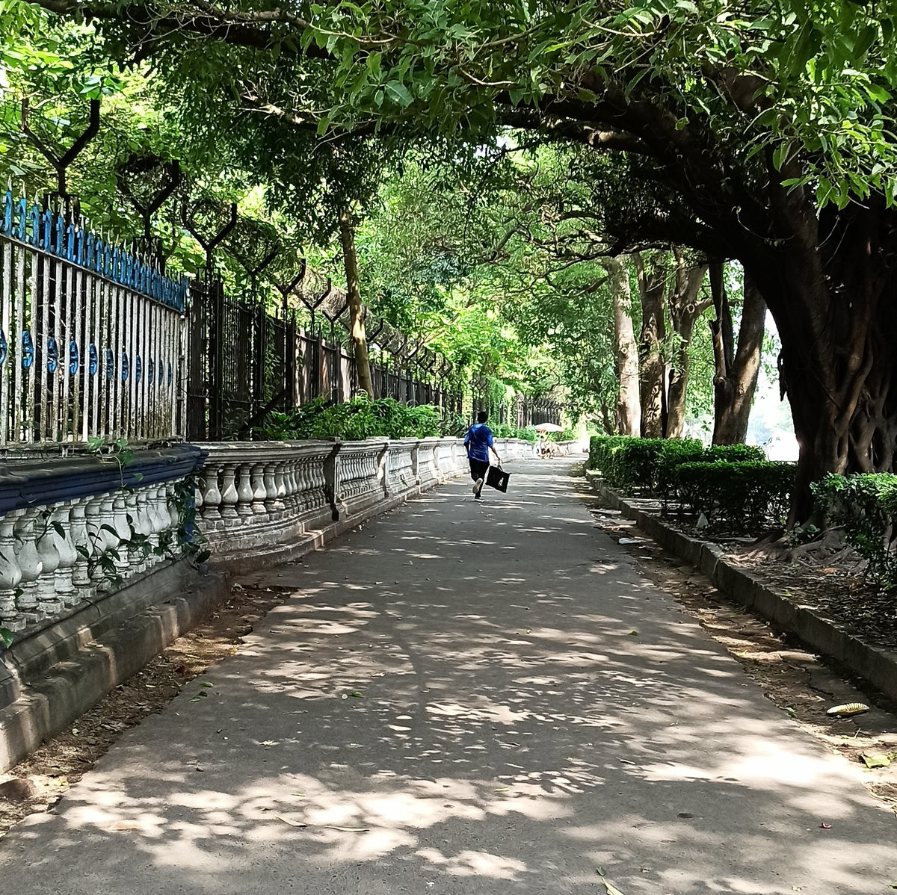
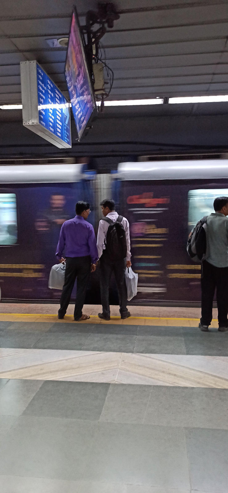
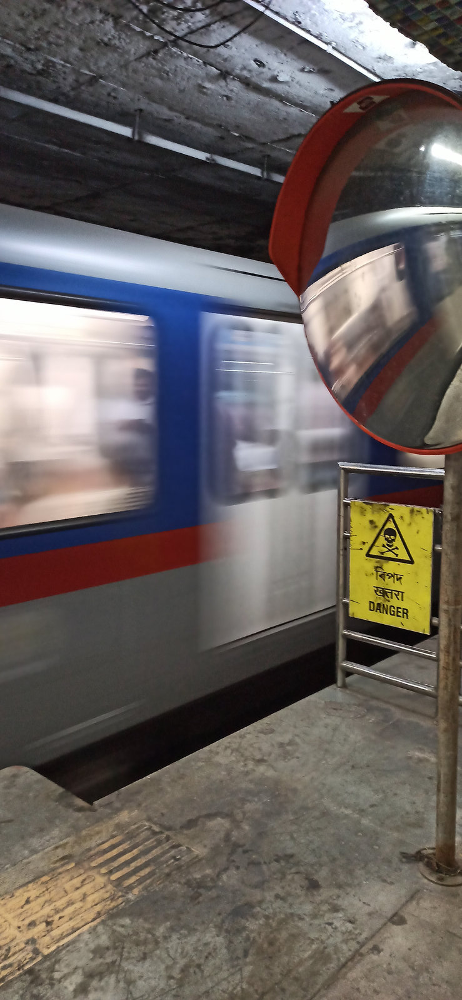
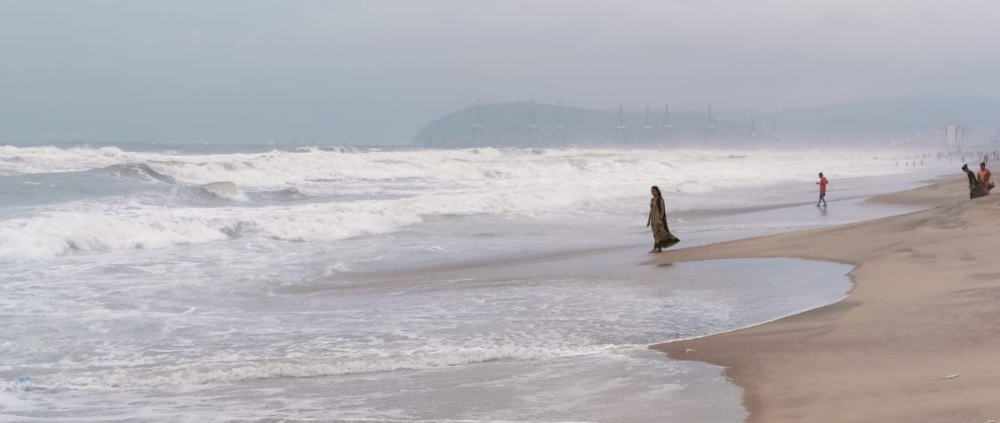

A personal photographic journal
Stories in
the everyday.
Street scenes. Passing journeys.
The quiet things we almost miss.

01 / The collection
Life, as it happens.
A few moments from the archive.
Pause on whatever catches your eye.


Passing journeys
01Between arrivals


Everyday rhythms
02A city in motion


Quiet moments
03Where the day slows down
02 / Behind the lens
Hi, I’m Mohan.
I like to look closer.
There’s a story in a passing train, a patch of sunlight, a familiar street. Photography is how I pause long enough to notice it.
This is my collection of those moments — the ordinary, the fleeting, and the quietly beautiful.
More about me03 / Say hello
A story to share?
Let’s talk.
A thought, a question, or a new perspective.
I’d love to hear from you.